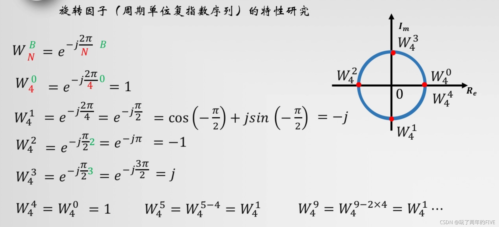
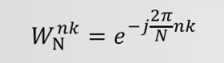

DFT中的旋转因子W的理解¶
定义¶
旋转因子（Twiddle Factor）\(W_N\) 是单位周期复指数序列，定义为：
N点DFT中，旋转因子的一般形式为：
其中： - \(N\) — DFT变换长度（N点DFT） - \(n\) — 时域序列样值的序号，\(0 \leq n \leq N-1\) - \(k\) — 频域序号（第k个频率采样点），\(0 \leq k \leq N-1\)
几何直观：单位圆等分¶

\(W_N\) 表示在复平面上单位圆的一个点，下标 \(N\) 是 \(2\pi\) 的分母，表示把单位圆 \(N\) 等分，每一份的角度是 \(\frac{2\pi}{N}\)。
这个基本角度间隔我们叫它基频。
N=4 举例¶

以 \(N=4\) 为例：
在单位圆上对应四个点：\((1, 0)\)、\((0, -j)\)、\((-1, 0)\)、\((0, j)\)，正好将圆四等分。
物理意义：频域采样间隔¶
旋转因子就是DFT在变换区间内，等间隔采样序列频谱函数的采样间隔。
类比理解： - 时域采样：以时间为基本单位，每隔 \(T_s\) 秒采样一个点 - 频域采样：以旋转因子为基本单位，每隔 \(\frac{2\pi}{N}\) 弧度采样一个频谱点
比如 \(N=4\) 要在频域里采样4个点，以什么为采样单位来贯穿这4个点呢？
刚好傅里叶变换中有能表达为复指数的形式，而在复平面这个单位圆里就平均分为 \(N\) 等分，那一份就是频率采样的单位。
4点DFT中，频率采样的第一个点就是 ，第二个点就是 \(W_4^2\)，以此类推。而旋转因子就是表达这个等间隔采样序列的频谱函数。
欧拉公式联系¶
复指数与三角函数的连接是欧拉公式：
因此旋转因子可以展开为：
常用旋转因子值表¶
N=2¶
| \(k\) | \(W_2^k\) | 值 |
|---|---|---|
| 0 | \(e^0\) | \(1\) |
| 1 | \(e^{-j\pi}\) | \(-1\) |
N=4¶
| \(k\) | \(W_4^k\) | 值 |
|---|---|---|
| 0 | \(e^0\) | \(1\) |
| 1 | \(e^{-j\pi/2}\) | \(-j\) |
| 2 | \(e^{-j\pi}\) | \(-1\) |
| 3 | \(e^{-j3\pi/2}\) | \(j\) |
N=8¶
| \(k\) | \(W_8^k\) | 值（近似） |
|---|---|---|
| 0 | \(e^0\) | \(1\) |
| 1 | \(e^{-j\pi/4}\) | \(\frac{\sqrt{2}}{2} - j\frac{\sqrt{2}}{2} \approx 0.707 - 0.707j\) |
| 2 | \(e^{-j\pi/2}\) | \(-j\) |
| 3 | \(e^{-j3\pi/4}\) | \(-\frac{\sqrt{2}}{2} - j\frac{\sqrt{2}}{2} \approx -0.707 - 0.707j\) |
| 4 | \(e^{-j\pi}\) | \(-1\) |
重要性质¶
1. 周期性¶
旋转因子以 \(N\) 为周期循环，这在FPGA实现中意味着只需存储一个周期的查找表。
2. 对称性¶
这是半周期反对称，FFT蝶形运算的核心优化依据——后半部分的旋转因子只需取负号即可得到。
3. 可约性¶
在DFT公式中的角色¶
N点DFT定义为：
旋转因子 \(W_N^{nk}\) 作为加权系数，将时域序列 \(x(n)\) 投影到第 \(k\) 个频域采样点上。
FPGA实现要点¶
存储优化：查找表（LUT）¶
利用旋转因子的周期性和对称性，只需存储 \(N/4\) 个值（第一象限），其余通过符号变换和索引映射获得：
- 第二象限：\(W_N^{N/4+k} = -j \cdot W_N^k\)（实部虚部交换并变号）
- 第三象限：\(W_N^{N/2+k} = -W_N^k\)（取负）
- 第四象限：\(W_N^{3N/4+k} = j \cdot W_N^k\)
CORDIC算法¶
对于需要动态计算旋转因子的场景（如变长FFT），可使用CORDIC算法直接在硬件中计算 \(\sin/\cos\)，无需查找表，但速度较慢。
量化精度¶
旋转因子通常用定点数表示： - 16-bit Q15 格式：精度 \(\approx 2^{-15} \approx 3 \times 10^{-5}\)，适用于大多数应用 - 18-bit/20-bit：高精度需求（如雷达信号处理） - 浮点（FPGA软核或DSP48）：最高精度但资源消耗大
全并行 IFFT 的倒序输入¶
为什么需要倒序？¶
倒序（Bit-Reversal）是 Cooley-Tukey FFT/IFFT 算法的固有特性，源于按时间抽取（DIT）或按频率抽取（DIF）的分解方式。
核心原因：N点FFT/IFFT通过 \(\log_2(N)\) 级蝶形运算实现。每一级将数据按奇偶索引分成两组：
经过 \(\log_2(N)\) 次"奇偶拆分"后，原始索引的二进制位被逐位反转。
倒序确定规则¶
对于N点IFFT，索引位宽 \(B = \log_2(N)\)。将索引的 B位二进制表示左右翻转，即得倒序索引。
32点IFFT倒序表（B = 5）¶
| 自然顺序索引 | 5位二进制 | 位翻转 | 倒序索引 |
|---|---|---|---|
| 0 | 00000 |
00000 |
0 |
| 1 | 00001 |
10000 |
16 |
| 2 | 00010 |
01000 |
8 |
| 3 | 00011 |
11000 |
24 |
| 4 | 00100 |
00100 |
4 |
| 5 | 00101 |
10100 |
20 |
| 6 | 00110 |
01100 |
12 |
| 7 | 00111 |
11100 |
28 |
| 8 | 01000 |
00010 |
2 |
| 9 | 01001 |
10010 |
18 |
| 10 | 01010 |
01010 |
10 |
| 11 | 01011 |
11010 |
26 |
| 12 | 01100 |
00110 |
6 |
| 13 | 01101 |
10110 |
22 |
| 14 | 01110 |
01110 |
14 |
| 15 | 01111 |
11110 |
30 |
| 16 | 10000 |
00001 |
1 |
| 17 | 10001 |
10001 |
17 |
| 18 | 10010 |
01001 |
9 |
| 19 | 10011 |
11001 |
25 |
| 20 | 10100 |
00101 |
5 |
| 21 | 10101 |
10101 |
21 |
| 22 | 10110 |
01101 |
13 |
| 23 | 10111 |
11101 |
29 |
| 24 | 11000 |
00011 |
3 |
| 25 | 11001 |
10011 |
19 |
| 26 | 11010 |
01011 |
11 |
| 27 | 11011 |
11011 |
27 |
| 28 | 11100 |
00111 |
7 |
| 29 | 11101 |
10111 |
23 |
| 30 | 11110 |
01111 |
15 |
| 31 | 11111 |
11111 |
31 |
快速记忆规律：
- 索引 0 和 31（全0和全1）翻转后不变
- 对称性：bit_rev(i) + bit_rev(N-1-i) = N-1
- 2的幂次位置互换：1↔16, 2↔8, 4↔4, 8↔2, 16↔1
DIF 结构（倒序输入，顺序输出）¶
采用按频率抽取（DIF）结构时，输入需要倒序排列：
输入端口: [0] [1] [2] [3] [4] [5] [6] [7] [8] [9] [10] [11] [12] [13] [14] [15]
数据索引: X[0] X[16] X[8] X[24] X[4] X[20] X[12] X[28] X[2] X[18] X[10] X[26] X[6] X[22] X[14] X[30]
输入端口: [16] [17] [18] [19] [20] [21] [22] [23] [24] [25] [26] [27] [28] [29] [30] [31]
数据索引: X[1] X[17] X[9] X[25] X[5] X[21] X[13] X[29] X[3] X[19] X[11] X[27] X[7] X[23] X[15] X[31]
输出为自然顺序：x[0], x[1], x[2], ..., x[31]
DIT 结构（顺序输入，倒序输出）¶
采用按时间抽取（DIT）结构时，输入自然顺序，输出倒序：
输入端口: [0] [1] [2] [3] ... [31]
数据索引: X[0] X[1] X[2] X[3] ... X[31]
输出端口: [0] [1] [2] [3] [4] [5] [6] [7] ...
数据索引: x[0] x[16] x[8] x[24] x[4] x[20] x[12] x[28] ...
需要在输出端再做一次倒序排列才能恢复自然顺序。
FPGA 硬件实现¶
固定连线（硬布线置换网络）¶
全并行IFFT的倒序是固定置换，可直接用导线交叉连接实现，无需额外逻辑：
// 32点IFFT输入倒序连线示例（DIF结构）
assign ifft_in[0] = X[0];
assign ifft_in[1] = X[16];
assign ifft_in[2] = X[8];
assign ifft_in[3] = X[24];
assign ifft_in[4] = X[4];
assign ifft_in[5] = X[20];
// ... 依此类推
assign ifft_in[31] = X[31];
参数化倒序模块¶
module bit_reverse #(
parameter N = 32,
parameter B = 5 // log2(N)
)(
input wire [B-1:0] in_index,
output wire [B-1:0] out_index
);
assign out_index = {<<{in_index}}; // SystemVerilog位翻转操作符
endmodule
方案对比¶
| 方案 | 延迟 | 资源消耗 | 适用场景 |
|---|---|---|---|
| 硬布线置换 | 0周期 | 仅连线 | 全并行架构，固定点数 |
| BRAM置换 | 1-2周期 | BRAM+地址逻辑 | 变点数IFFT |
| 在线计算 | 1周期 | 移位寄存器 | 资源紧张时 |
IFFT 与 FFT 倒序的关系¶
IFFT本质上可以用FFT结构实现：
因此： - FFT的倒序规则完全适用于IFFT - 区别仅在于旋转因子取共轭（\(W_N^{nk} \to W_N^{-nk}\)） - 最后输出需要除以 \(N\)（可右移 \(\log_2(N)\) 位近似）
Python 验证¶
import numpy as np
# 生成32点倒序索引
N = 32
B = int(np.log2(N))
bit_rev = [int(f'{i:0{B}b}'[::-1], 2) for i in range(N)]
print(bit_rev)
# [0, 16, 8, 24, 4, 20, 12, 28, 2, 18, 10, 26, 6, 22, 14, 30,
# 1, 17, 9, 25, 5, 21, 13, 29, 3, 19, 11, 27, 7, 23, 15, 31]
# 验证IFFT结果
X = np.random.randn(32) + 1j * np.random.randn(32)
x_expected = np.fft.ifft(X)
# 倒序输入FFT计算IFFT
X_rev = X[bit_rev]
x_computed = np.fft.fft(X_rev) / N
x_computed = x_computed[bit_rev] # 输出也需倒序恢复
print(np.allclose(x_expected, x_computed)) # True
32点并行IFFT各级旋转因子的确定¶
编号约定¶
本节级数按硬件信号流向（从左到右）编号，与蝶形流图一致： - 第1级：最靠近输入端（倒序），蝶形跨度最小 - 第m级：最靠近输出端（自然序），蝶形跨度最大
通用公式¶
对于N点基-2 DIF FFT/IFFT（倒序输入，自然序输出），共 \(m = \log_2(N)\) 级蝶形运算。第 s 级（\(s = 1, 2, \ldots, m\)，从左到右）的旋转因子由以下规则确定：
| 参数 | 含义 |
|---|---|
| 蝶形跨度 | \(2^{s-1}\)（配对元素间距，第1级最小，第m级最大） |
| 步长（stride） | \(N / 2^s\)，即指数 \(k\) 的间隔 |
| 唯一旋转因子个数 | \(2^{s-1}\) |
| 等价形式 | \(W_{2^s}^k\)（可约性） |
32点（m = 5）各级详解¶
下图为32点DIF蝶形流图，信号从左（倒序输入）流向右（自然序输出）：
输入(倒序) → [第1级] → [第2级] → [第3级] → [第4级] → [第5级] → 输出(自然序)
Xn[0] W₂⁰=1 W₄⁰,¹ W⁰~³ W₁₆⁰~⁷ W₃₂⁰~¹⁵ x[0]
Xn[16] (仅加减) (2个因子) (4个因子) (8个因子) (16个因子) x[1]
Xn[8] x[2]
... ...
Xn[31] x[31]
第1级（最左边，紧贴输入）：\(W_{32}^{16k} = W_2^k\)，k = 0¶
- 蝶形跨度 = \(2^0 = 1\)（相邻元素配对）
- 唯一因子数 = \(2^0 = 1\)
- 旋转因子：\(W_{32}^{16 \cdot 0} = W_{32}^0 = 1\)
| k | \(W_{32}^{16k}\) | 等价 | 复数值 |
|---|---|---|---|
| 0 | \(W_{32}^0\) | \(W_2^0\) | \(1\) |
第1级所有蝶形运算的旋转因子均为 1，即只做加减法，无需复数乘法。对应流图中最左边的红框区域。
第2级：\(W_{32}^{8k} = W_4^k\)，k = 0 ~ 1¶
- 蝶形跨度 = \(2^1 = 2\)
- 唯一因子数 = \(2^1 = 2\)
| k | \(W_{32}^{8k}\) | 等价 | 复数值 |
|---|---|---|---|
| 0 | \(W_{32}^0\) | \(W_4^0\) | \(1\) |
| 1 | \(W_{32}^8\) | \(W_4^1\) | \(-j\) |
第3级：\(W_{32}^{4k} = W_8^k\)，k = 0 ~ 3¶
- 蝶形跨度 = \(2^2 = 4\)
- 唯一因子数 = \(2^2 = 4\)
| k | \(W_{32}^{4k}\) | 等价 | 复数值 |
|---|---|---|---|
| 0 | \(W_{32}^0\) | \(W_8^0\) | \(1\) |
| 1 | \(W_{32}^4\) | \(W_8^1\) | \(0.7071 - 0.7071j\) |
| 2 | \(W_{32}^8\) | \(W_8^2\) | \(-j\) |
| 3 | \(W_{32}^{12}\) | \(W_8^3\) | \(-0.7071 - 0.7071j\) |
第4级：\(W_{32}^{2k} = W_{16}^k\)，k = 0 ~ 7¶
- 蝶形跨度 = \(2^3 = 8\)
- 唯一因子数 = \(2^3 = 8\)
| k | \(W_{32}^{2k}\) | 等价 | 复数值 |
|---|---|---|---|
| 0 | \(W_{32}^0\) | \(W_{16}^0\) | \(1\) |
| 1 | \(W_{32}^2\) | \(W_{16}^1\) | \(0.9239 - 0.3827j\) |
| 2 | \(W_{32}^4\) | \(W_{16}^2\) | \(0.7071 - 0.7071j\) |
| 3 | \(W_{32}^6\) | \(W_{16}^3\) | \(0.3827 - 0.9239j\) |
| 4 | \(W_{32}^8\) | \(W_{16}^4\) | \(-j\) |
| 5 | \(W_{32}^{10}\) | \(W_{16}^5\) | \(-0.3827 - 0.9239j\) |
| 6 | \(W_{32}^{12}\) | \(W_{16}^6\) | \(-0.7071 - 0.7071j\) |
| 7 | \(W_{32}^{14}\) | \(W_{16}^7\) | \(-0.9239 - 0.3827j\) |
第5级（最右边，紧贴输出）：\(W_{32}^k\)，k = 0 ~ 15¶
- 蝶形跨度 = \(2^4 = 16\)（配对：0↔16, 1↔17, ..., 15↔31）
- 唯一因子数 = \(2^4 = 16\)
| k | \(W_{32}^k\) | 复数值（近似） |
|---|---|---|
| 0 | \(e^{-j \cdot 0}\) | \(1\) |
| 1 | \(e^{-j\pi/16}\) | \(0.9808 - 0.1951j\) |
| 2 | \(e^{-j\pi/8}\) | \(0.9239 - 0.3827j\) |
| 3 | \(e^{-j3\pi/16}\) | \(0.8315 - 0.5556j\) |
| 4 | \(e^{-j\pi/4}\) | \(0.7071 - 0.7071j\) |
| 5 | \(e^{-j5\pi/16}\) | \(0.5556 - 0.8315j\) |
| 6 | \(e^{-j3\pi/8}\) | \(0.3827 - 0.9239j\) |
| 7 | \(e^{-j7\pi/16}\) | \(0.1951 - 0.9808j\) |
| 8 | \(e^{-j\pi/2}\) | \(-j\) |
| 9 | \(e^{-j9\pi/16}\) | \(-0.1951 - 0.9808j\) |
| 10 | \(e^{-j5\pi/8}\) | \(-0.3827 - 0.9239j\) |
| 11 | \(e^{-j11\pi/16}\) | \(-0.5556 - 0.8315j\) |
| 12 | \(e^{-j3\pi/4}\) | \(-0.7071 - 0.7071j\) |
| 13 | \(e^{-j13\pi/16}\) | \(-0.8315 - 0.5556j\) |
| 14 | \(e^{-j7\pi/8}\) | \(-0.9239 - 0.3827j\) |
| 15 | \(e^{-j15\pi/16}\) | \(-0.9808 - 0.1951j\) |
各级规律总结¶
| 级 s（从左到右） | 蝶形跨度 \(2^{s-1}\) | 唯一因子数 \(2^{s-1}\) | 步长 \(N/2^s\) | 等价旋转因子 | 角度间隔 |
|---|---|---|---|---|---|
| 1 | 1 | 1 | 16 | \(W_2\) | \(\pi\) (180°) |
| 2 | 2 | 2 | 8 | \(W_4\) | \(\pi/2\) (90°) |
| 3 | 4 | 4 | 4 | \(W_8\) | \(\pi/4\) (45°) |
| 4 | 8 | 8 | 2 | \(W_{16}\) | \(\pi/8\) (22.5°) |
| 5 | 16 | 16 | 1 | \(W_{32}\) | \(\pi/16\) (11.25°) |
核心规律：从输入到输出，每经过一级，蝶形跨度翻倍，因子数翻倍，步长减半，等价于一个更大点数的DFT旋转因子。这正是旋转因子可约性 \(W_{mN}^{mn} = W_N^n\) 的直接体现。
FPGA LUT 存储策略¶
利用上述规律，全并行32点IFFT只需一套 \(W_{32}\) 查找表（存储第一象限的8个值），各级通过索引步长访问：
// 32点IFFT旋转因子LUT（第一象限，8个值）
// 实际存储 W_32^0 ~ W_32^7 的实部和虚部
parameter [15:0] W32_LUT_REAL [0:7] = '{
16'h7FFF, 16'h7A6D, 16'h6A6D, 16'h539A, // W^0~W^3 实部
16'h539A, 16'h4722, 16'h3622, 16'h21B2 // W^4~W^7 实部
};
parameter [15:0] W32_LUT_IMAG [0:7] = '{
16'h0000, 16'h0639, 16'h1269, 16'h1D78, // W^0~W^3 虚部
16'h25E0, 16'h2B47, 16'h2F4F, 16'h31C3 // W^4~W^7 虚部
};
// 各级访问索引（硬件流向，从左到右）：
// 第1级（最左）: idx = 0 （步长16，结果恒为1，仅加减）
// 第2级: idx = 0,8 （步长8）
// 第3级: idx = 0,4,8,12 （步长4）
// 第4级: idx = 0,2,4,...,14 （步长2）
// 第5级（最右）: idx = 0,1,2,...,15 （步长1，通过象限映射+符号调整）
相关笔记¶
- 数字下变频（DDC） — 正交混频中同样用到复指数旋转
- 空间谱估计与 MUSIC 算法 — 阵列信号处理中的DFT/FFT应用